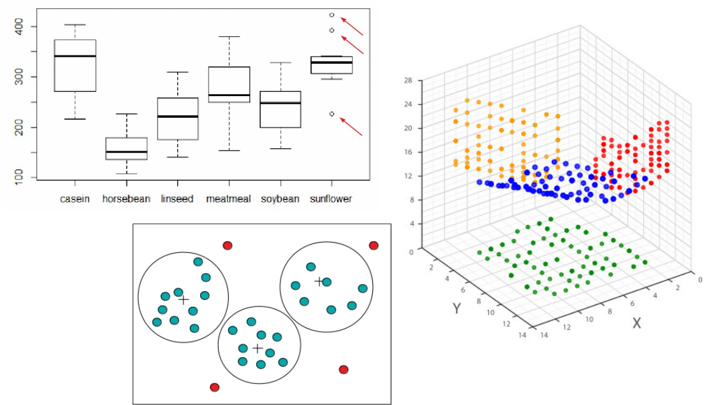

Pré-processamento de Dados
Departamento de Computação Aplicada - UFLA
Conteúdo da Aula

- Limpeza de Dados
- Integração de Dados
- Transformação de Dados
- Redução de Dados
- Balanceamento de Dados

O que é Mineração de Dados?
É o processo automático de descoberta de novas informações e conhecimento, úteis a uma aplicação, no formato de regras e padrões, “escondidas” em grandes volumes de dados.
Dados
Formatos de Dados
Até pouco tempo atrás, técnicas de mineração de dados eram aplicadas apenas a conjunto de dados em um formato estruturado.
- Dados representados por meio de uma matriz bidimensional \(n \times m\), onde \(n\) é o número de linhas e \(m\) é o número de colunas.
- Cada linha representa um objeto do conjunto de dados: registro, instância, exemplo etc.
- Cada coluna representa uma característica do objeto no conjunto de dados: variável, atributo, campo etc.
| Nome | Peso | Pressão | Temp |
|---|---|---|---|
| Pedro | 78 | 125 | 39 |
| Tiago | 54 | 120 | 37 |
| Caio | 87 | 148 | 38 |
Conjunto de dados estruturado com 3 instâncias e 4 atributos (Nome, Peso, Pressão e Temp).
Formatos de Dados
Apesar de grande parte das técnicas de mineração de dados funcionarem principalmente em conjuntos de dados estruturados, a maioria dos conjuntos de dados reais produzidos atualmente são não estruturados.

Enquanto dados estruturados são mais fáceis de serem processados, os não estruturados são geralmente mais fáceis de serem analisados por humanos.
Formatos de Dados
- Os formatos de dados não se resumem apenas a estruturados e não estruturados.
- Existe um outro formato que fica entre esses dois: o semi-estruturado.
- Apresentam alguma estrutura em parte dos dados.
- Exemplos: e-mails, arquivos XML.
- Vale observar que grande parte das técnicas utilizadas para análise de dados funcionam apenas para dados estruturados.
Dados Não Rotulados versus Dados Rotulados
| Nome | Peso | Pressão | Temp |
|---|---|---|---|
| Pedro | 78 | 125 | 39 |
| Tiago | 54 | 120 | 37 |
| Caio | 87 | 148 | 38 |
- Conjunto de dados estruturado não rotulado.
- Cada um dos 4 atributos é denominado atributo descritivo.
- Dados usados por tarefas descritivas.
| Nome | Peso | Pressão | Temp | Diagnóstico |
|---|---|---|---|---|
| Pedro | 78 | 125 | 39 | Doente |
| Tiago | 54 | 120 | 37 | Saudável |
| Caio | 87 | 148 | 38 | Doente |
- Conjunto de dados estruturado rotulado.
- Os 4 primeiros atributos são denominados atributos preditivos.
- O último atributo (Diagnóstico) é conhecido como rótulo, atributo alvo ou atributo classe.
- Dados usados por tarefas preditivas.
Tipos de Dados
É importante conhecermos os tipos de dados porque eles determinam quais ferramentas e técnicas podem ser usadas para analisar os dados.
| Tipos de atributo | Principais características | Subtipos | Exemplos |
|---|---|---|---|
| Numéricos (quantitativos) |
Representam quantidades numéricas; permitem operações matemáticas (soma, média, desvio padrão etc.); usados em cálculos estatísticos e métricas de distância |
Contínuos | Altura (1,72 m), temperatura (36,5 °C), peso (70,3 kg) |
| Discretos | Número de filhos (2), quantidade de compras (5), número de acessos (10) | ||
| Categóricos (qualitativos) |
Representam categorias ou rótulos; não permitem operações aritméticas; análise baseada em igualdade/diferença e >, < (para ordinais) |
Nominais | Cor dos olhos (azul, verde), sexo (M, F), país (Brasil, Chile) |
| Ordinais | Nível de satisfação (baixo, médio, alto), escolaridade (fundamental, médio, superior) |
Etapas de um Projeto de Ciência de Dados
Etapas de um Projeto
A execução de um projeto de ciência de dados envolve as diversas etapas:
- Entendimento do domínio da aplicação: Compreender o problema a ser resolvido, identificando os objetivos do projeto do ponto de vista do cliente.
- Coleta de dados: Reunir os dados necessários para a análise.
- Pré-processamento de dados: Detectar e corrigir problemas nos dados visando melhorar a qualidade dos mesmos. Inclui tarefas como identificação e remoção de ruídos, tratamento de valores ausentes e de inconsistências.
- Transformação de dados: Transformar os dados para um formato adequado para a análise dos mesmos. Inclui tarefas como normalização e discretização de dados.
- Modelagem: Escolher e aplicar os algoritmos para construir modelos preditivos ou descritivos, dependendo do objetivo do projeto.
- Avaliação: Avaliar o desempenho dos modelos utilizando métricas apropriadas e validar os resultados.
- Implantação: Implantar os modelos em um ambiente de produção para que possam ser utilizados pelo cliente.
Processo de Descoberta de Conhecimento em Bases de Dados

Pré-processamento de Dados
Limpeza de Dados
Qualidade dos Dados
- A mineração de dados é muitas vezes aplicada a dados que foram coletados e armazenados por outros propósitos ou para aplicações futuras não especificadas.
- Isso faz com que esses dados possam não ter a qualidade desejada para a mineração de dados.
- Esses dados podem conter inconsistências, ruídos e valores ausentes, o que pode levar a resultados de mineração de dados imprecisos ou enganosos.
- Portanto, dois caminhos são possíveis para lidar com essa questão:
- Realizar pré-processamento para detectar e corrigir problemas de qualidade dos dados.
- Usar algoritmos que tenham a capacidade de lidar com dados de baixa qualidade.
Qualidade dos Dados
Dentre os problemas comuns de qualidade dos dados, podemos destacar:
- Inconsistências: Valores inconsistentes de atributos ou informações conflitantes.
- Exemplo: um registro de uma pessoa com 3 anos que tem formação em curso de nível superior.
- Valores ausentes: Ausência de valores de atributos.
- Exemplo: um registro de paciente que não tem o peso registrado.
- Ruídos e outliers: Dados que contêm erros e valores atípicos que podem distorcer a análise.
- Exemplo de ruído: um registro de temperatura corporal que indica um valor de 50 °C (biologicamente impossível).
- Exemplo de outlier: um registro de peso de uma pessoa que indica um valor de 180 kg (biologicamente improvável).
Inconsistências
Como surgem os dados inconsistentes?
- Erro humano no momento da coleta de dados.
- Erros gerados pelos equipamentos de coleta de dados.
- Erros provenientes da integração de diferentes bases de dados:
- Mesmo atributo contendo diferentes codificações.
- Duplicação de instâncias.
Inconsistências
Como encontrar as inconsistências?
- Usar todo conhecimento obtido a partir de uma análise prévia dos dados:
- Quais tipos de dado e domínio de cada atributo da base de dados?
- Quais são os valores aceitáveis para cada atributo?
- Todos os valores do atributo estão contidos no conjunto de valores aceitáveis?
- A partir de descritores estatísticos (medidas de tendência central e de dispersão) é possível identificar valores atípicos?
- Verificar inconsistências na representação dos dados (p.ex., datas como 08/03/2026 e 2026/03/08).
- Avaliar se existem regras para os atributos (p.ex.: o atributo pode conter valores nulos?).
Inconsistências
Como corrigir as inconsistências?
- Escrever seu próprio código para detectar e corrigir inconsistências.
- Usar técnicas de detecção e correção de inconsistências, como:
- Regras de consistência: definir regras para verificar a consistência dos dados e corrigir os dados que violam essas regras.
- Algoritmos de detecção de duplicatas: identificar e remover instâncias duplicadas.
Valores Ausentes
Valores de atributos(dados) nem sempre estão disponíveis.
- Exemplo: vários registros de uma base de dados de vendas não possuem valores para o atributo salário do consumidor.
A ausência de dados pode ser resultado de:
- Mau funcionamento de equipamento.
- Inconsistência com outros dados armazenados e, portanto, apagado.
- Dado não inserido devido à falta de entendimento.
- Dado foi considerado sem importância no momento da coleta.
Valores Ausentes
Como lidar com os valores ausentes de atributos?
Ignorar o registro (instância): usualmente utilizado quando o atributo classe possui valor desconhecido ou quando a instância contém muitos valores de atributos desconhecidos.
Preencher os valores ausentes manualmente: tedioso + inviável?
Usar uma constante global para preencher os valores ausentes: “desconhecido”.
Usar uma medida de tendência central do atributo (p. ex. média, moda) para preencher os valores ausentes.
Usar uma medida de tendência central das instâncias pertencentes à mesma classe da instância que possui o valor ausente.
Utilizar o valor mais provável para preencher o valor ausente: regressão, inferência Bayesiana, árvores de decisão etc.
Valores Ausentes
Observação
Alguns algoritmos de mineração de dados possuem mecanismos internos capazes de lidar com valores ausentes durante o processo de construção do modelo, sem a necessidade de pré-processamento para preenchimento dos valores ausentes.
- Exemplos: comitês de árvores de decisão, Naive Bayes e k-vizinhos mais próximos.
Ruídos
Ruídos são resultantes de desvios aleatórios ou erros sistemáticos na coleta ou registro dos dados.
- Desvios aleatórios: erros que ocorrem de forma imprevisível e sem um padrão específico.
- Exemplo: um sensor de temperatura que ocasionalmente registra um valor incorreto devido a uma falha momentânea.
- Erros sistemáticos: erros que ocorrem de forma consistente, geralmente devido a um problema no processo de coleta ou registro dos dados.
- Exemplo: um sensor de temperatura que está mal calibrado e registra consistentemente valores mais altos do que a temperatura real.
Ruídos
Quais as consequências dos ruídos no processo de mineração de dados?
- Aumento do tempo de processamento para geração dos modelos.
- Aumento da complexidade dos modelos gerados, o que pode reduzir o desempenho dos modelos.
Observação
Geralmente é difícil ter certeza de que um valor é um ruído. A menos que o valor seja inconsistente, tem-se apenas uma suspeita de que o valor seja um ruído.
Uma vez identificados os ruídos, eles podem ser tratados de maneira semelhante ao tratamento de valores ausentes.
Outliers
Outliers são valores atípicos que se diferenciam significativamente dos demais dados.
- A presença de outliers não necessariamente é um problema com a qualidade dos dados, podendo ser apenas uma variação natural nos dados.
- Portanto, é importante identificar e analisar os outliers para determinar se eles são resultado de erros ou se representam variações legítimas nos dados.
Identificação de Ruídos e Outliers
A identificação de valores atípicos pode ser feita por meio de descritores estatísticos (p.ex., valores que estão a mais de 3 desvios padrão da média), por meio de visualizações (p.ex., boxplots) ou com uso de algoritmos de agrupamento.

Pré-processamento de Dados
Integração de Dados
Integração de Dados
Finalidade da integração de dados: combinar dados de múltiplas fontes em uma única fonte de forma coerente. As fontes podem ser diversas bases de dados, cubos de dados ou arquivos de texto.
- Integração de dados é muito comum em processos de mineração de dados.
- Uma integração cuidadosa pode evitar redundâncias e inconsistências nos dados.
Integração de Dados
Questões a serem consideradas durante a integração:
Problema da identificação de entidades: identificação das mesmas entidades do mundo real a partir de múltiplas fontes de dados.
- Exemplo: Como um analista saberá se
customer_idem uma base de dados ecust_numberem outra base de dados correspondem ao mesmo atributo?
R.: Uso de metadados.
- Exemplo: Como um analista saberá se
Redundância em termos de atributos: dados redundantes ocorrem com frequência quando integramos dados de múltiplas fontes.
- O mesmo atributo pode ter nomes diferentes em bases de dados distintas.
- Um atributo pode ter sido derivado de outro atributo em outra tabela.
Como detectar redundâncias entre atributos?
R.: Análise de correlação (Teste \(\chi^2\), Coeficiente de Correlação de Pearson etc.).Redundância em termos de registros: duplicação de instâncias.
Transformação de Dados
Transformação de Dados
Objetivo:
- Colocar os dados de forma apropriada para a etapa de mineração.
Benefícios da transformação de dados:
- Tornar a etapa de mineração de dados mais eficiente.
- Obter padrões mais fáceis de serem entendidos.
Como ela ocorre?
- Por meio da transformação dos valores atuais dos atributos em outro conjunto de valores que sejam mais adequados para a etapa de mineração de dados.
Transformação de Dados
A transformação de dados pode envolver:
- Anonimização de dados: ocultação ou remoção de dados sensíveis.
- Geração de hierarquia de conceitos: substituição de dados primitivos por conceitos de ordem superior utilizando-se uma hierarquia de conceitos.
- Exemplo: atributo Rua \(\rightarrow\) atributo Cidade ou País.
- Transformação de dados numéricos: alteração do valor numérico de um atributo quantitativo para outro valor numérico.
- Exemplo: normalização de dados.
- Conversão de dados entre tipos diferentes: alteração do tipo dos valores de um atributo.
- Exemplo: conversão de um atributo numérico para um atributo categórico por meio da discretização.
Anonimização de Dados
É o processo de ocultar ou remover dados sensíveis para proteger a privacidade dos indivíduos ou organizações envolvidos.
- O processo de anonimização deve englobar informações que possam identificar alguém direta ou indiretamente.
- Exemplos de dados sensíveis: nome, e-mail, endereço, foto, número de telefone, CPF, RG, número de cartão de crédito etc.
Técnicas de Anonimização
- Supressão: remoção completa de dados sensíveis.
- Generalização: substituição de dados sensíveis por valores mais generais.
- Perturbação: adição de ruído aos dados sensíveis para torná-los menos identificáveis.
- Criptografia: transformação de dados sensíveis em um formato ilegível sem a chave de descriptografia.
Anonimização de Dados
Observação
Em uma base de dados, cada atributo pode ser anonimizado de uma maneira diferente e a estratégia de anonimização deve ser escolhida com base no tipo de dado existente.
Atributos Qualitativos:
- Nominais: basta preservar a mesma quantidade de valores, utilizando valores que não possibilitem a identificação dos objetos.
- Exemplo: substituição do nome dos clientes por códigos alfanuméricos.
- Ordinais: deve-se preservar a ordem relativa dos valores, novamente utilizando valores que não possibilitem a identificação dos objetos.
- Exemplo: substituição de uma escala de satisfação (insatisfeito, neutro, satisfeito, muito insatisfeito) por uma escala (1,2,3,4).
Anonimização de Dados
Observação
Em uma base de dados, cada atributo pode ser anonimizado de uma maneira diferente e a estratégia de anonimização deve ser escolhida com base no tipo de dado existente.
Atributos Quantitativos:
- Com perda de informação: pode-se usar a generalização, substituindo os valores por intervalos.
- Exemplo: substituição da idade de clientes por faixas etárias (0-18, 19-35, 36-60, 60+).
- Sem perda de informação: pode-se usar a perturbação, adicionando um valor constante aos valores numéricos.
- Exemplo: adição de um valor constante à idade dos clientes.
Transformação de Dados Numéricos
O objetivo dessa transformação é alterar a variação ou espalhamento dos valores numéricos originais.
As duas técnicas mais comuns para transformação de dados numéricos são:
- Aplicação de funções matemáticas simples.
- Normalização.
Transformação de Dados Numéricos
Funções Matemáticas Simples
Uma função matemática simples é aplicada aos valores numéricos originais de um atributo preditivo.
- Essa transformação altera a distribuição de valores de um atributo para atender alguma necessidade da aplicação.
Funções matemáticas comumente utilizadas:
- Função logarítmica: usada para reduzir a escala de valores muito grandes.
- Para distribuições com cauda longa, ajuda a reduzir a influência de valores extremos, tornando a distribuição mais simétrica.
- Exemplos: renda, faturamento, contagem de eventos (cliques).
Transformação de Dados Numéricos
Funções Matemáticas Simples
Funções matemáticas comumente utilizadas:
- Função raiz quadrada: usada para reduzir a escala de valores muito grandes, mas de forma menos agressiva do que a função logarítmica.
- Exemplo: Considere os seguintes valores de um atributo: 1, 10 e 100. A aplicação da função logarítmica (base 10) resultaria em 0, 1 e 2, respectivamente, enquanto a aplicação da função raiz quadrada resultaria em 1; 3,16 e 10, respectivamente.
- Inverso: usada para transformar valores pequenos em valores grandes e vice-versa (para valores \(\neq\) 0).
- Módulo: usada para transformar valores negativos em valores positivos.
Transformação de Dados Numéricos
Normalização de Dados
Em alguns conjuntos de dados, os atributos numéricos podem ter escalas muito diferentes, o que pode afetar o desempenho de alguns algoritmos de mineração de dados.
- Exemplo: um conjunto de dados de clientes pode conter o atributo de idade (com valores entre 0 e 100) e o atributo de renda (com valores entre 1.000 e 30.000).
Transformação de Dados Numéricos
Normalização de Dados
Por que atributos com escalas muito diferentes podem afetar o desempenho de alguns algoritmos de mineração de dados?
- Algoritmos baseados em distância podem ser influenciados por atributos com escalas maiores, fazendo com que esses atributos tenham maior influência no modelo do que atributos com escalas menores.
- k-NN e agrupamento hierárquico são exemplos de algoritmos baseados em distância.
- Algoritmos de otimização (p.ex., gradiente descendente) podem ter dificuldades para convergir quando os atributos têm escalas muito diferentes.
- Redes neurais utilizam gradiente descendente para otimizar os pesos da rede.
Transformação de Dados Numéricos
Normalização de Dados
Dentre as diferentes técnicas de normalização, podemos destacar:
- Normalização por escala: transforma os valores de um atributo para um intervalo específico pré-definido, por exemplo [0, 1] ou [-1, 1].
- Normalização por padronização ou variação: transforma os valores de um atributo em um conjunto de valores que terá média 0 e desvio padrão 1.
Transformação de Dados Numéricos
Normalização de Dados por Escala
A normalização por escala é realizada por meio da seguinte fórmula:
\[x_i' = \frac{x_i - \text{min}(X)}{\text{max}(X) - \text{min}(X)} * (\text{max}_{novo}(X) - \text{min}_{novo}(X)) + \text{min}_{novo}(X),\]
onde:
- \(x_i\) é o valor original do atributo,
- \(\text{min}(X)\) e \(\text{max}(X)\) são, respectivamente, o menor e o maior valor do atributo \(X\),
- \(\text{min}_{novo}(X)\) e \(\text{max}_{novo}(X)\) são, respectivamente, o menor e o maior valor do atributo \(X\) após a normalização.
Transformação de Dados Numéricos
Normalização de Dados por Escala
Quais são as desvantagens da normalização por escala?
- É sensível a outliers, pois a presença de um valor extremo pode distorcer a escala dos dados.
- A maioria dos valores ficará concentrada em uma pequena faixa do intervalo normalizado.
- Se o conjunto de dados de teste tiver um valor superior a \(\text{max}(X)\) ou inferior a \(\text{min}(X)\), os valores normalizados do conjunto de dados de teste estarão fora do intervalo normalizado definido para o conjunto de dados de treinamento.
- Isso pode levar a resultados imprevisíveis durante a mineração de dados.
Transformação de Dados Numéricos
Normalização de Dados por Padronização
A normalização por padronização, também denominada z-score, é realizada por meio da seguinte fórmula:
\[x_i' = \frac{x_i - \mu}{\sigma},\]
onde:
- \(x_i\) é o valor original do atributo,
- \(\mu\) é a média do atributo \(X\),
- \(\sigma\) é o desvio padrão do atributo \(X\).
Conversão de Dados entre Tipos Diferentes
Tipos de conversão:
- Atributo qualitativo para um atributo quantitativo: codificação de dados.
- Exemplo: conversão do atributo sexo (categórico) para o atributo sexo (numérico) por meio da codificação, onde “M” é codificado como 0 e “F” é codificado como 1.
- Atributo quantitativo para um atributo qualitativo: discretização de dados.
- Exemplo: conversão do atributo idade (numérico) para o atributo faixa etária (categórico) por meio da discretização.
Conversão de Dados entre Tipos Diferentes
Qualitativo para Quantitativo
A forma de fazer a conversão depende da existência ou não de uma ordem natural entre os valores do atributo qualitativo.
- Atributos ordinais: existe uma ordem natural entre os valores, portanto, essa ordem deve ser preservada na conversão.
- Exemplo: o atributo nível de satisfação (baixo, médio, alto) pode ser convertido em um atributo numérico onde “baixo” é codificado como 1, “médio” é codificado como 2 e “alto” é codificado como 3.
- Atributos nominais: não existe uma ordem natural entre os valores, portanto, a conversão é feita codificando cada valor nominal utilizando um ou mais algarismos binários (one-hot-encoding).
- Exemplo: o atributo cor dos olhos (azul, verde, castanho) pode ser convertido em três atributos binários: cor_olhos_azul, cor_olhos_verde e cor_olhos_castanho.
Conversão de Dados entre Tipos Diferentes
Qualitativo para Quantitativo
Observações sobre o one-hot encoding:
- Como o número de atributos resultantes da conversão é igual ao número de valores distintos do atributo nominal, ela pode gerar conjuntos de dados com muitos atributos.
- Uma alternativa para esse caso é a construção de pseudo-atributos.
- Exemplo: Imagine o atributo nominal nome do país (195 países no mundo). O one-hot encoding resultaria em 195 atributos binários, um para cada país. Já a construção de pseudo-atributos poderia resultar em apenas 9 atributos numéricos: nome do continente (7 valores nominais, portanto, 7 atributos binários), população (1 atributo com valor inteiro) e PIB (1 atributo com valor real).